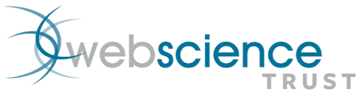

About WebSciX India

Web Science Trust
The Web Science Trust (WST) is a global charitable organization dedicated to advancing the understanding of the Web through interdisciplinary research and education. It coordinates the Web Science network (WSTNet), bringing together leading Web Science laboratories from around the world.
The origins of the Web Science Trust lie in the Web Science Research Initiative (WSRI), established in 2006 as a collaboration between MIT CSAIL and the University of Southampton. WSRI aimed to articulate a research agenda, develop educational curricula, and provide thought leadership for the emerging discipline of Web Science.
Over time, this initiative expanded into the Web Science Trust, which now supports a global ecosystem of conferences, journals, and research collaborations. Web Science today represents a mature interdisciplinary field studying the Web as a socio-technical system.
Web Science and its Interdisciplinary Foundations
Web Science integrates disciplines such as computer science, sociology, economics, and policy studies to understand the complex interactions between technology and society. The Web is not merely a technical infrastructure but a dynamic system shaped by human behavior, governance frameworks, and economic forces.
This interdisciplinary perspective enables technologists and social scientists to collaborate, creating a virtuous cycle of innovation and understanding in digital ecosystems.
Web Science Lab (WSL) at IIIT Bangalore
The Web Science Lab (WSL) at IIIT Bangalore is part of the global WSTNet and focuses on understanding how the Internet, WWW, and Artificial Intelligence impact human life across domains such as governance, education, business, and social systems.
Originally established as the Open Systems Lab (OSL) in 2002, WSL has evolved into a leading research group exploring socio-technical systems. The lab has contributed to initiatives such as digital empowerment through partnerships with organizations like Gooru Learning Inc. and has been involved in establishing the Centre of Excellence in Big Data Engineering.
The lab’s foundational thinking is also influenced by early work such as “The Power Law of Information: Life in a Connected World,” which anticipated many aspects of modern digital ecosystems.
Explore more:
WebSciX India: A Regional Extension of Web Science
WebSciX India is a proposed satellite event of the ACM Web Science Conference, designed to extend global Web Science discussions into the Indian context. Much like how TEDx localizes TED conferences, WebSciX brings localized perspectives to global research themes.
WebSciX builds upon the Web Science for Development (WS4D) series conducted in India since 2019, fostering interdisciplinary collaboration and addressing region-specific challenges.
India’s Digital Landscape
With over 800 million Internet users as of 2025, India represents one of the largest digital ecosystems globally. Its 1.4 billion population, linguistic diversity, and rapid technological adoption create both opportunities and challenges.
India has made significant progress in digital identity systems, payments, and public digital infrastructure. However, challenges such as digital divides, misinformation, and privacy concerns require localized Web Science approaches.
In this context, WebSciX India aims to:
- Address multilingual content and rural connectivity challenges
- Examine AI and Web impacts across key sectors
- Develop inclusive and scalable digital solutions
Previous Workshops and Events
WebSciX 2026
WebSciX 2026 focuses on the intersection of Web Science and emerging paradigms such as Generative and Agentic AI. The conference aims to explore how these technologies are reshaping digital ecosystems and influencing societal outcomes.
By bringing together researchers, technologists, policymakers, and civil society, WebSciX 2026 seeks to build a strong regional ecosystem while contributing to the global Web Science community.
Objectives
- Community Building: Interdisciplinary collaboration
- Localized Research: India-specific challenges
- Innovative Solutions: Scalable interventions
- Global Integration: Align with global research
Call to Action
WebSciX India invites researchers, technologists, policymakers, and civil society to join this initiative and collaboratively shape the future of Web Science and AI.